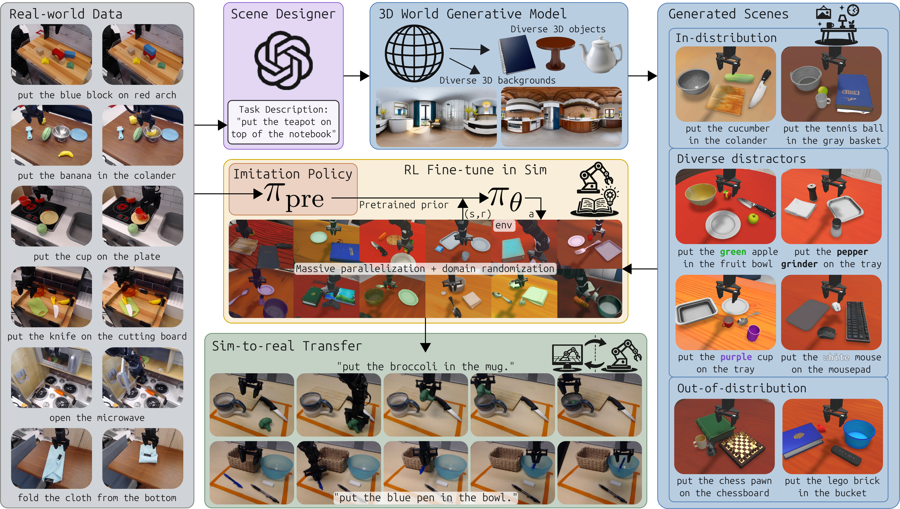
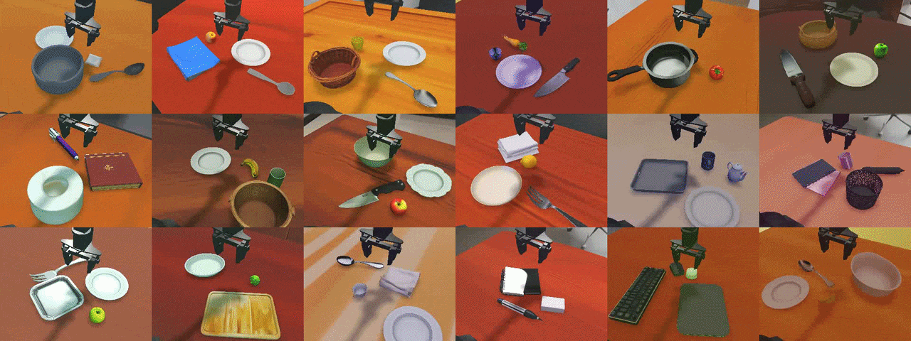
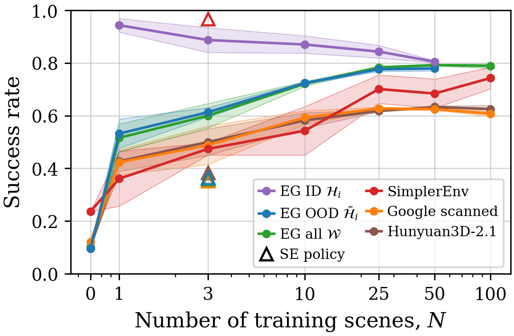
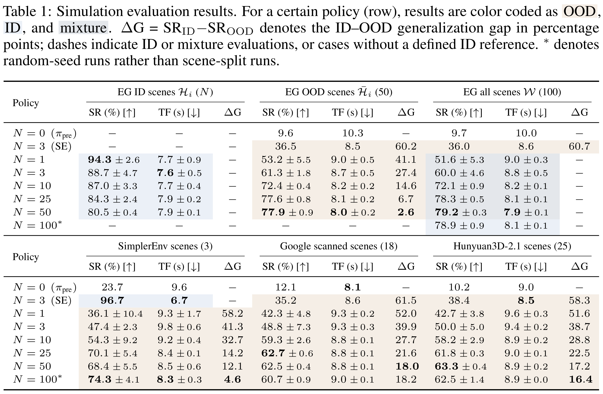

Scene 0
3× speed
2× speed
Task: “put the banana on the bowl.”
Distractors: broccoli, strawberry, plate
Conference on Robot Learning (CoRL) 2026

Generative 3D worlds enable scalable VLA reinforcement learning across diverse scenes, with successful transfer to real robots.
9.7% → 79.8%
Across 100 generated scenes.
53.2% → 77.9%
As training diversity increases from 1 to 50 scenes.
21.7% → 75%
Across 12 scenes and 240 experiments.
2.36×
By converting a flow-matching model to a one-step Gaussian policy.
We zero-shot sim-to-real deploy a policy trained on $N=100$ EmbodiedGen scenes and compare its performance with the VLA's initial performance. RL fine-tuning with 100 generated scenes increases success from 21.7% to 75% while increasing the average task completion speed by 13% over 240 experiments across 12 real-world scenes.
Blue, bold text marks objects or attributes that were out of distribution (OOD) during RL training, following Table 2. Attributes in parentheses describe the scene and were not included in the language command.
Task: “put the banana on the bowl.”
Distractors: broccoli, strawberry, plate
Task: “put the broccoli on the mug.”
Distractors: knife, cutting board
Task: “put the mushroom on the bowl.”
Distractors: banana, broccoli, plate
Task: “put the spoon on the napkin.”
Distractors: fork, plate
Task: “put the (pink) eraser on the notebook.”
Distractors: black pen, mug
Task: “put the (yellow) brush on the bowl.”
Distractors: banana, yellow marker
Task: “put the white eraser on the mug.”
Distractors: pink eraser, black pen, blue pen
Task: “put the red knife on the cutting board.”
Distractors: regular knife
Task: “put the blue pen on the (blue) bowl.”
Distractors: black pen, white eraser, basket
Task: “put the green marker on the basket.”
Distractors: red marker, yellow marker, dry erase eraser, cardboard box
Task: “put the screwdriver on the basket.”
Distractors: knife, black marker
Task: “put the blue teacup on the yellow teacup.”
Distractors: purple teacup, pink teapot, blue plate, yellow plate
VLA RL fine-tuning across 100 generated scenes with domain randomization. 3D generative world models allow for a scalable way to fine-tune VLAs while maintaining scene generality.

Increasing the number of training scenes $N$ improves zero-shot performance on out-of-distribution (OOD) scenes. Scaling from 1 to 50 generated training scenes raises success on held-out EmbodiedGen scenes from 53.2% to 77.9%, a 24.7-percentage-point improvement. Over the same range, in-distribution success decreases from 94.3% to 80.5%, narrowing the generalization gap from 41.1 to 2.6 percentage points. Generalization also improves on SimplerEnv, Google Scanned Objects, and Hunyuan3D-2.1 scenes, showing benefits beyond the training asset source. The largest OOD gains occur by approximately 25–50 scenes; later saturation may partly reflect reduced sampling per scene under the fixed compute budget. Overall, policies trained on 50–100 generated scenes achieve approximately 79% success across the full 100-scene set, compared with 9.7% for the imitation baseline.


@misc{choi2026scalingsimtorealvlareinforcementlearning,
title={Scaling Sim-to-Real VLA Reinforcement Learning with Generative 3D Worlds},
author={Andrew Choi and Xinjie Wang and Zhizhong Su and Wei Xu},
year={2026},
eprint={2603.18532},
archivePrefix={arXiv},
primaryClass={cs.RO},
url={https://arxiv.org/abs/2603.18532},
}